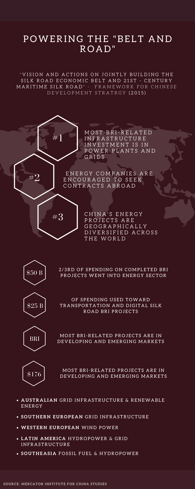
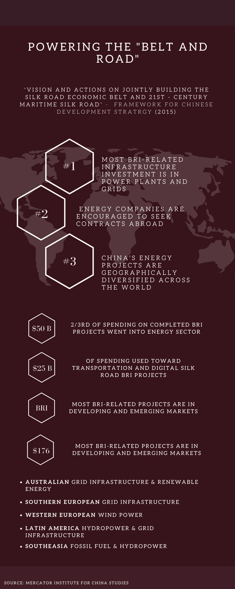
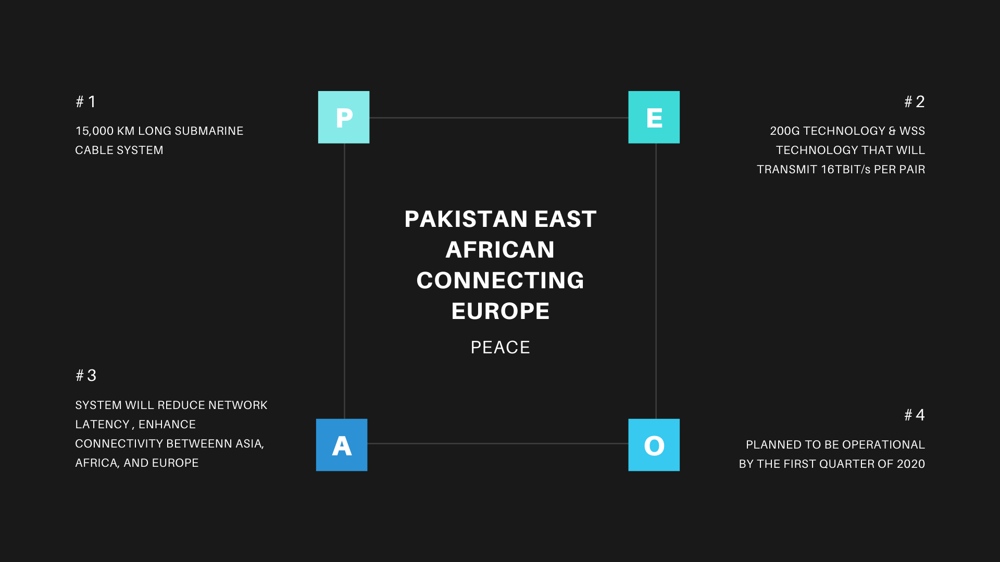
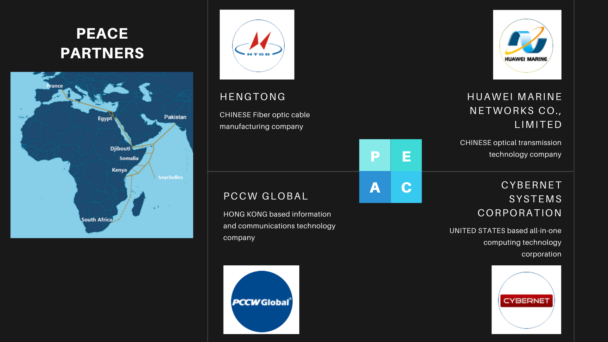
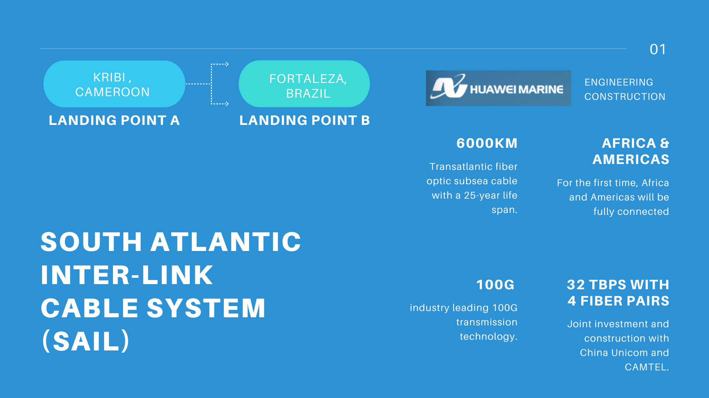
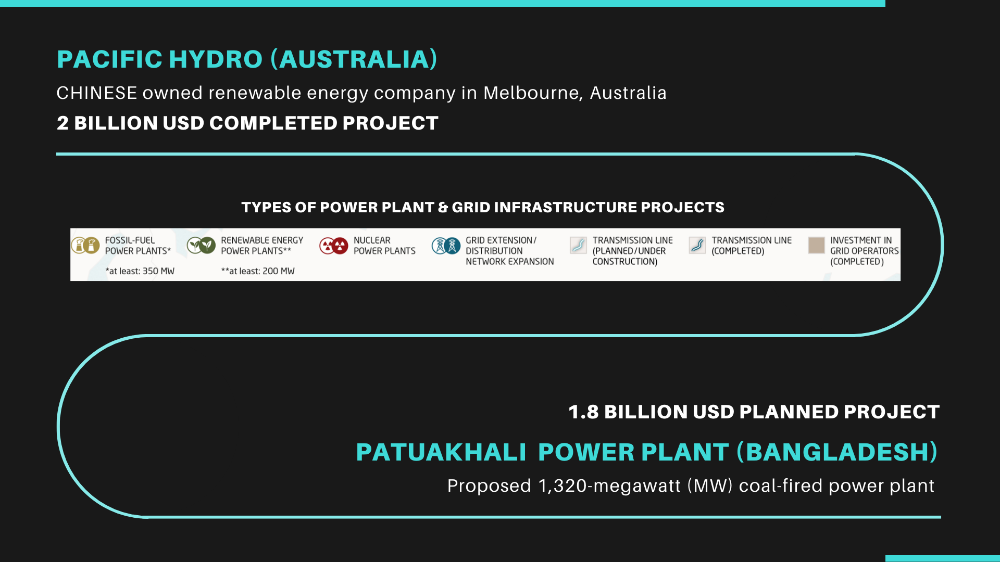

Spheres of Influence
PART FOUR | A Visualization of China’s Use of Soft Power Around the World
China's use of soft power poses a threat to United States foreign policy interests around the world. In 2018 the U.S. Intelligence Community identified China as a potential threat to the United States in their Worldwide Threat Assessment.
Spheres of Influence: "China and Russia will seek spheres of influence and to check US appeal and influence in their regions" (Director of National Intelligence, 2018, p. 4).
In an increasingly interconnected world, understanding the foreign relationships between countries is vital in cultivating diplomacy, ensuring a country’s interests are at the forefront of foreign policy, and in playing the game of maintaining global influence. Examining how China’s use of soft power around the world is influencing and altering the political attitudes between China and the United States is a source of knowledge for policy makers, companies, and governments. “The ability of a country to persuade others to do what it wants without force or coercion” (Ikenberry, 2004) is The Means to Success in World Politics according to Joseph Nye. This is also the definition to the term “soft power” coined by Nye in the late 1980s in which Nye argues that “states need both hard and soft power — the ability to coerce others as well as the ability to shape their long-term attitudes and preferences” (Ikenberry, 2004). In 2014, Chinese President Jinping Xi announced, “We should increase China’s soft power, give a good Chinese narrative, and better communicate China’s messages to the world” (Albert, 2018). China’s intent to use soft power is made explicit through new initiatives such as the Belt and Road Initiative, the Asia-Pacific Dream, and the Twenty-First-Century Maritime Silk Road.
To understand China’s ambitious Belt and Road Initiative we investigate China’s spheres of influence in the domains of energy and technology infrastructure. With China’s PLA Intelligence Strategic Support Force ambition to strengthen its cyber, electronic, and space warfare — mapping out where new cyber infrastructure projects gives us a unique perspective into areas of possible concern. Identifying where there are proposed, ongoing, and completed Chinese energy infrastructure projects is crucial to examining the where in the world China is building soft power influence and relationships with political leaders, investments companies, and local communities. The Mercator Institute for China Studies (MERICs) is an independent research organization established in 2013 in Berlin for “contemporary and practical research into China.” Researchers collected data on Chinese energy and infrastructure, digital silk road, transmission lines, and fiber optic cables — publishing their work in Networking the "Belt and Road": The future is digital and Powering the Belt and Road: China builds and invests in energy-infrastructure worldwide. The METRICs Belt and Road Tracker is a database which contains over 2,500 entries (as of September 2019) and is “continuously updated and expanded [with sources from] a wide set of Chinese and international official sources, industry associations, companies and media” (MERICs). An interactive and searchable visualization documents where in the world Chinese infrastructure projects are occurring under the following categories:
To navigate the interactive visualization, select which map layers you wish to view: Energy & Infrastructure, Digital Silk Road, Transmission Lines, Fiber Optic Cables. As shown under each layer, a specific color represents the category. You can also hover over the points to view the details. The search box on the right, allows the user to select specific subcatories of layers to view within the window shown. Zoom in and out to view map at different scales.
 

PAKISTAN EAST AFRICAN CONNECTING EUROPE SYSTEM
 SOUTH ATLANTIC INTER-LINK CABLE SYSTEM
PACIFIC HYDRO (AUSTRALIA) & PATUAKHALI POWER PLANT (BANGLADESH)
